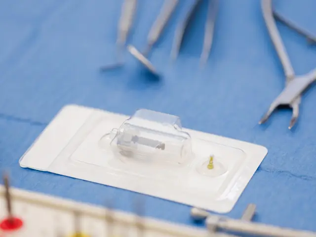
Implantologia
Peças de titânio, com excelente biocompatibilidade, que se aparafusam no osso do maxilar e substituem a raiz de um ou mais dentes.
Os melhores especialistas em todas as áreas da Medicina Dentária, num serviço personalizado que alia inovação e trabalho de equipa — rápido, eficaz, atencioso e de elevada qualidade médica e técnica.
Urgências no próprio dia, mediante marcação, de segunda a sexta, das 8h30 às 19h00.
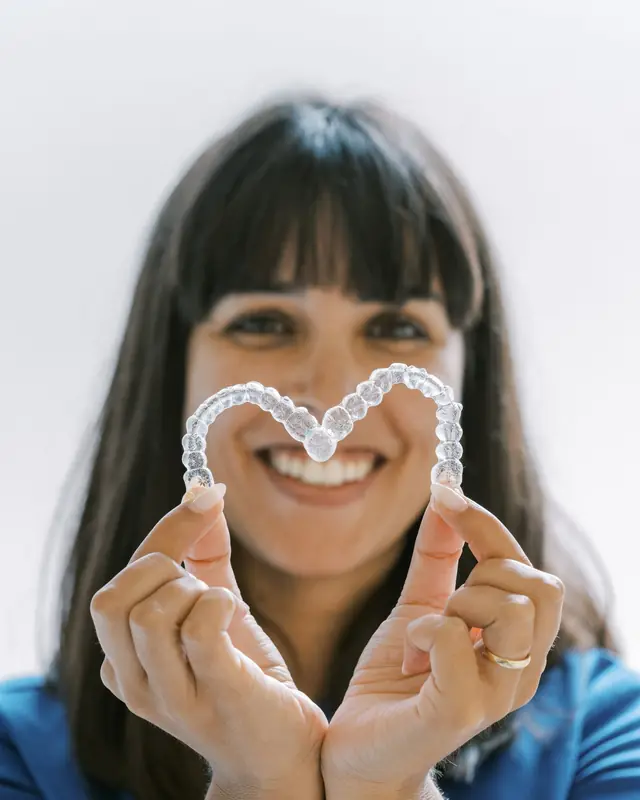
Uma equipa clínica multidisciplinar, numa postura de rigor e inovação, com uma variedade de opções de tratamento para cada paciente.

Peças de titânio, com excelente biocompatibilidade, que se aparafusam no osso do maxilar e substituem a raiz de um ou mais dentes.
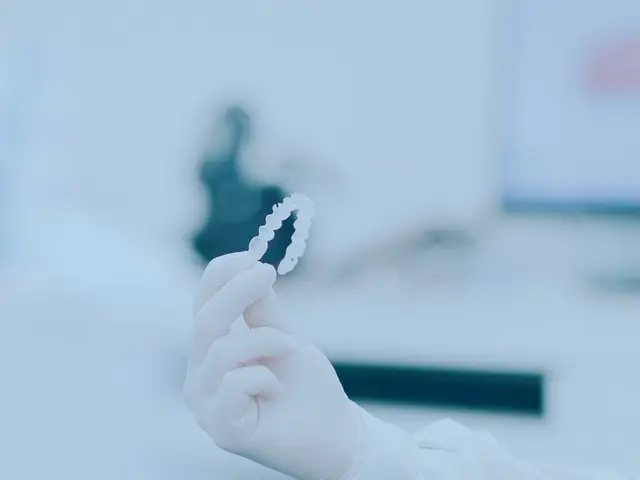
Alinhadores ultra-discretos, alternativos aos brackets metálicos ou cerâmicos, com resultados idênticos e maior conforto.
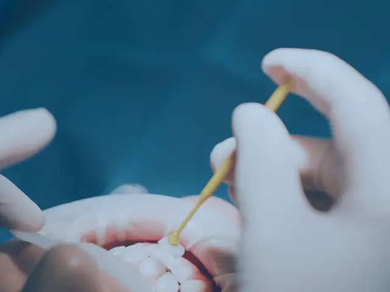
Finas peças de cerâmica, com menos de 1 mm, que corrigem a forma, o volume, a cor e outras imperfeições dos dentes.
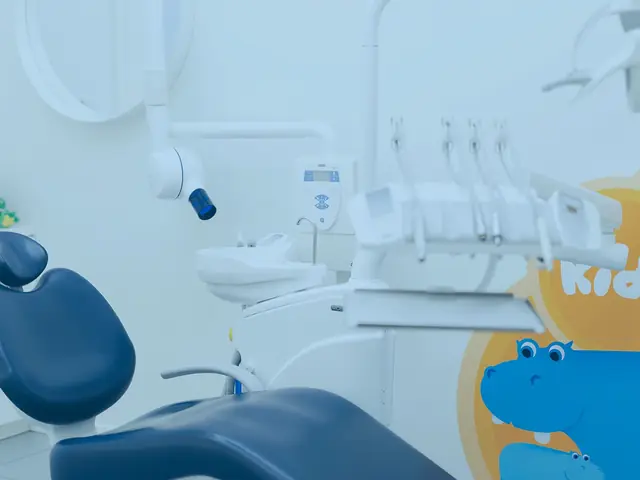
A saúde oral de bebés, crianças e adolescentes tem na Clínica Delille uma área dedicada.
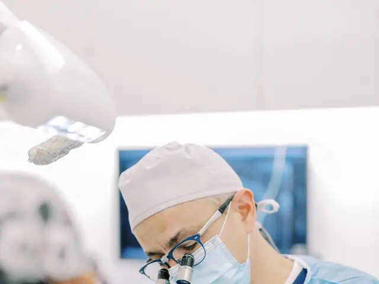
Na Unidade de Cirurgia Oral fazemos cirurgia oral, implantologia e periodontologia, com prática clínica exclusiva nestas áreas.
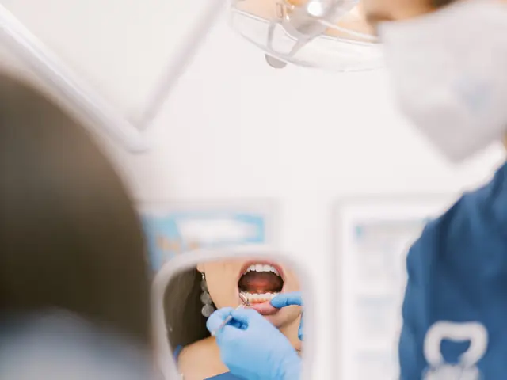
Diagnóstico, prevenção e manutenção dos tratamentos. A consulta é aconselhada de 6 em 6 meses, ajustada a cada paciente.
Temos atendimento de urgência no próprio dia, mediante marcação, em função da disponibilidade dos médicos dentistas e dentro do horário de funcionamento: segunda a sexta, das 8h30 às 19h00 (exceto feriados, 24 e 31 de dezembro).
“Lembro-me das primeiras visitas, dos meus primeiros pacientes.”
Dr. Francisco Delille, diretor clínico
Início da atividade na Cruz de Celas, num consultório com 2 gabinetes e atividade essencialmente generalista.
Ampliação para 7 gabinetes e início do trabalho por especialidades, com uma equipa multidisciplinar.
Nova clínica na Solum, com 25 gabinetes e laboratório de prótese próprio.
Duas unidades na mesma clínica: Medicina Dentária e Cirurgia Oral.
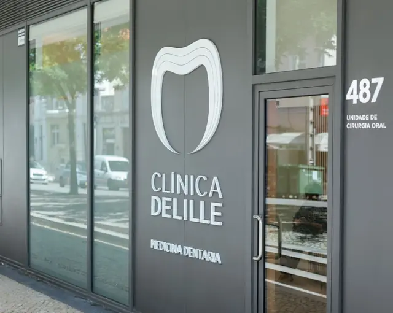
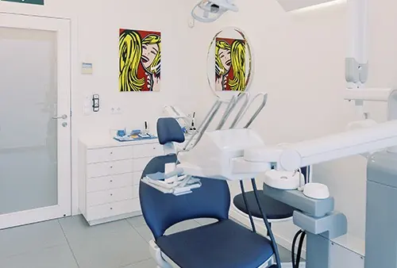
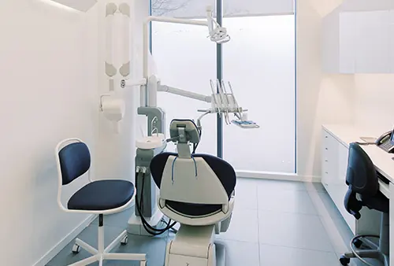
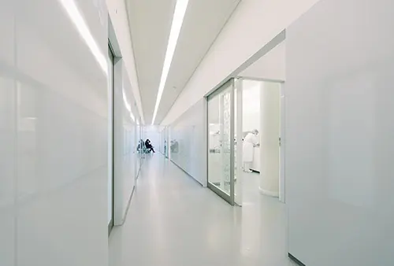
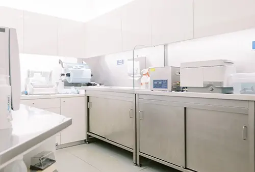
Pensada ao detalhe para garantir segurança, conforto e precisão em cada tratamento. Depois da fase cirúrgica, a reabilitação oral é assegurada na Unidade de Medicina Dentária.
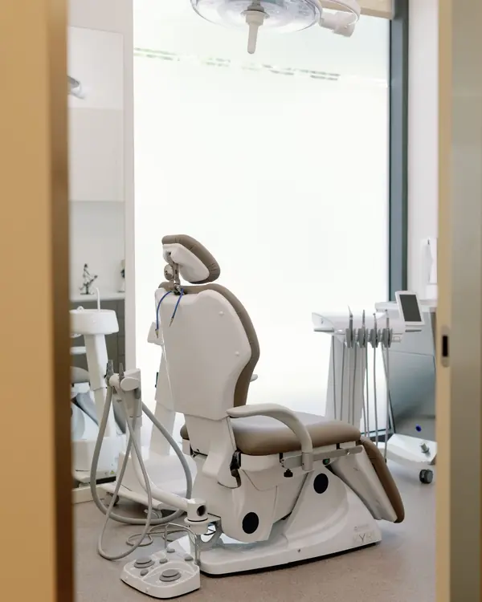
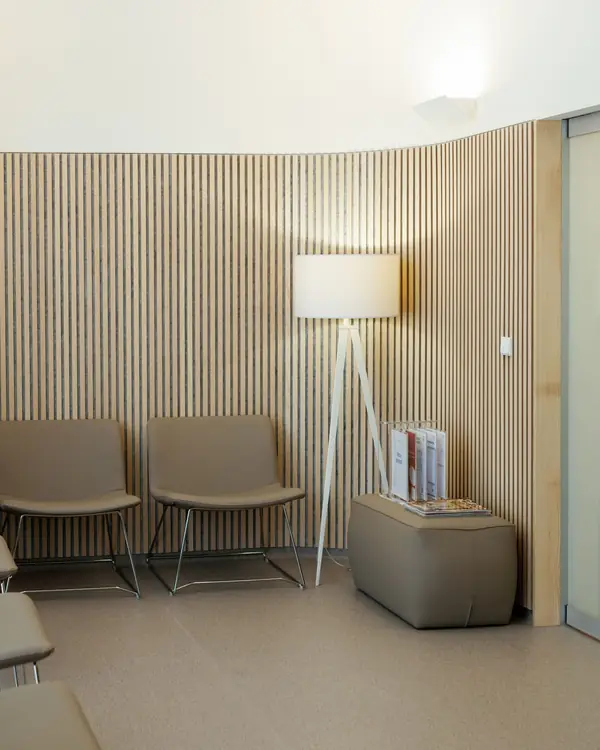
Médicos dentistas organizados por áreas, para resolver dos casos mais simples aos mais complexos.
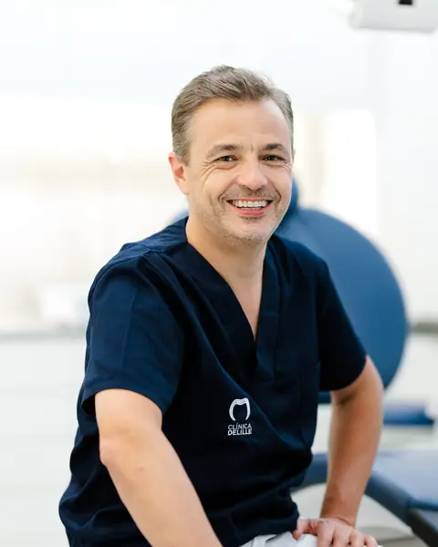
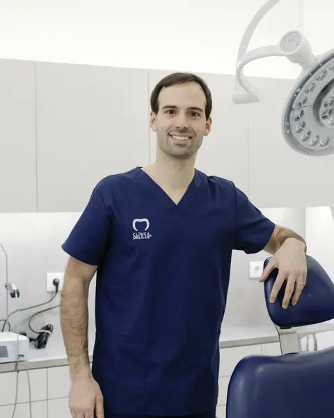
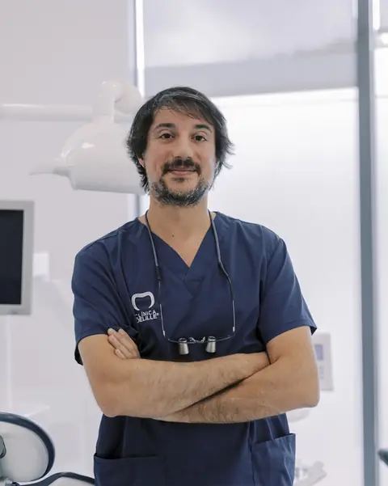
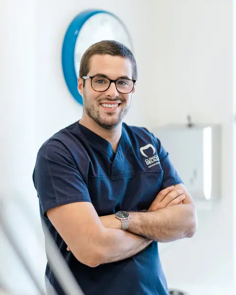
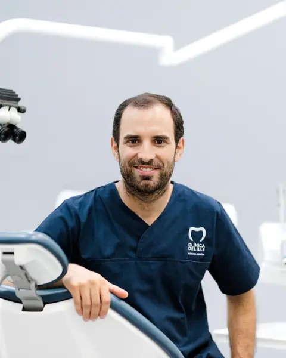
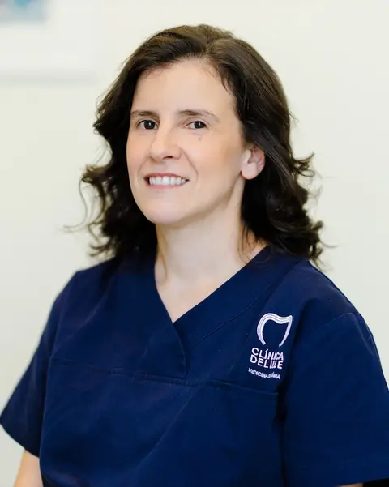
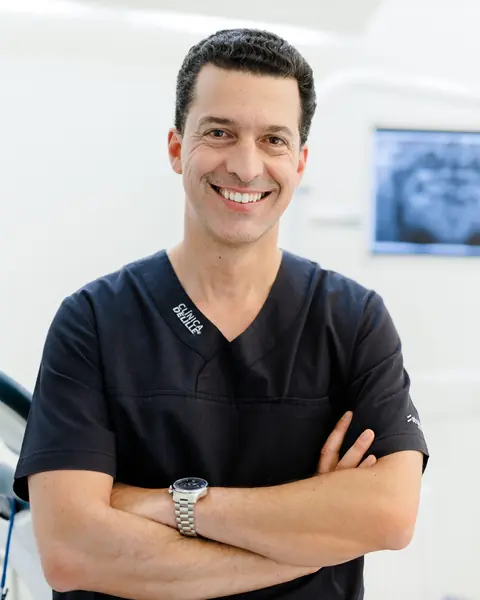
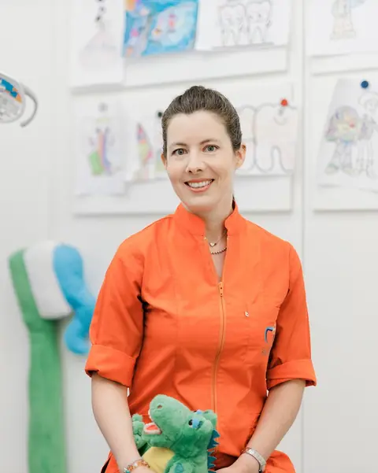
A equipa completa reúne 36 profissionais, de implantologia a higiene oral, fisioterapia craniomandibular e medicina estética facial.
Ver toda a equipa“Excelente atendimento! Estou em processo de reabilitação oral (…) desde a primeira consulta me tranquilizou com a explicação de todas as fases do processo.”
C. L. · Reabilitação oral
“Tem boas instalações, equipamentos, atendimento e preço. (…) A marcação também é muito bem tratada.”
M. F. · Estética dentária
“Fui atendido numa situação de urgência e correu tudo a 100%. Muito bem atendido (…) muita higiene. Recomendo.”
M. D. · Urgência
Excertos de opiniões publicadas no site atual da clínica.
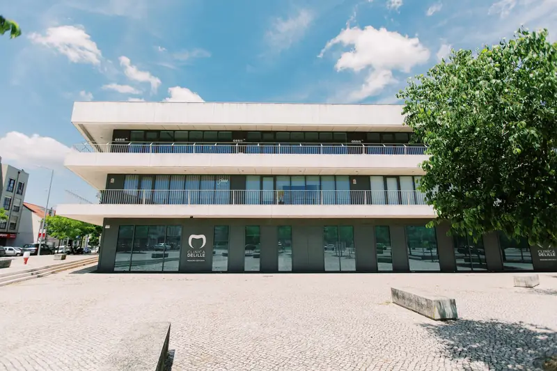
| Segunda a sexta | 8h30 – 19h00 |
Deixe aqui o seu pedido. A consulta só fica marcada depois do contacto da nossa receção.